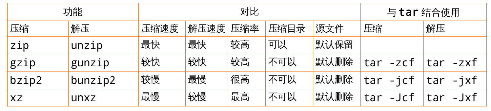

tar 命令最初的设计目的是将文件备份到磁带上 (tape archive) ,因而得名 tar 。

.zip
.zip 扩展名表示文件是使用许多 zip 归档程序和压缩程序之一(但不是 gzip )创建的。因为这是一种非常流行的压缩格式,算法的详细描述也有很多,所以可以找到用于所有操作系统的有用的移植形式。这包括创建和扩展带有 .zip 文件扩展名的档案的压缩和解压缩实用程序。在 Linux 上有两种这样的工具:
免费的 Info-ZIP 和以赢利为目的的 PKZIP for Linux 。
如果您只是偶尔需要创建或打开 zip 文件,使用 Info-ZIP 。如果希望使用在 MS-DOS 或其它系统上使用的相同工具,请选择PKZIP ( PKZIP 可用于许多操作系统)。用于微软 Windows 的 WinZIP 和用于 Mac OS 的Stufflt 这两种实用程序可以创建和打开相互之间兼容的档案。
Info-ZIP 在无法使用 gzip 或 tar 的情况下可以提供压缩和解压缩的一个不错的选择,这或许是在Linux 、微软 Windows 和 Mac OS 用户之间交换压缩文件的一种最好的形式。有许多不错的 zip 程序(有开放源码的,也有商业的)可用于这些操作系统,它们应该能确保文件的顺利交换(当然,只要是在特定于某个特定工具的特殊功能关闭的情况下)。
rhel7 默认带有 info-zip 软件
[root@mastera0 zip-3.0]# which zip /usr/bin/zip [root@mastera0 zip-3.0]# rpm -qf /usr/bin/zip zip-3.0-10.el7.x86_64 [root@mastera0 zip-3.0]# head -n 18 /usr/share/doc/zip-3.0/README Zip 3.0 is the first Zip update adding large file support. For now Zip 2.3x remains available and supported, but users should switch to this new release. Testing for Zip 3.0 has focused mainly on Unix, VMS, Max OS X, and Win32, and some other ports may not be fully supported yet. If you find your favorite port is broke, send us the details or, better, send bug fixes. It's possible that support for some older ports may be dropped in the future. Copyright (c) 1990-2008 Info-ZIP. All rights reserved. See the accompanying file LICENSE (the contents of which are also included in unzip.h, zip.h and wiz.h) for terms of use. If, for some reason, all of these files are missing, the Info-ZIP license also may be found at: ftp://ftp.info-zip.org/pub/infozip/license.html and http://www.info-zip.org/pub/infozip/license.html. [root@mastera0 ~]# rpm -qi zip Name : zip Version : 3.0 Release : 10.el7 Architecture: x86_64 Install Date: Thu 23 Jun 2016 01:50:41 PM CST Group : Applications/Archiving Size : 815045License : BSD Signature : RSA/SHA256, Thu 03 Apr 2014 06:52:17 AM CST, Key ID 199e2f91fd431d51 Source RPM : zip-3.0-10.el7.src.rpm Build Date : Tue 28 Jan 2014 06:35:49 AM CST Build Host : x86-019.build.eng.bos.redhat.com Relocations : (not relocatable) Packager : Red Hat, Inc. <http://bugzilla.redhat.com/bugzilla> Vendor : Red Hat, Inc. URL : http://www.info-zip.org/Zip.html Summary : A file compression and packaging utility compatible with PKZIP Description : The zip program is a compression and file packaging utility. Zip is analogous to a combination of the UNIX tar and compress commands and is compatible with PKZIP (a compression and file packaging utility for MS-DOS systems). Install the zip package if you need to compress files using the zip program.
zip 命令用法
zip 命令可以用来解压缩文件,或者对文件进行打包操作。 zip 是个使用广泛的压缩程序,文件经它压缩后会另外产生具有 “ .zip” 扩展名的压缩文件。
-z, --compress force compression 强制压缩 -d, --decompress, --uncompress force decompression 解开压缩文件 -t, --test test compressed file integrity 测试压缩文件是否正确无误 -l, --list list information about .xz files 列出压缩文件的相关信息 -k, --keep keep (don't delete) input files 不删除源文件 -f, --force force overwrite of output file and (de)compress links 强制压缩,覆盖输出文件同名的文件 -c, --stdout, --to-stdout write to standard output and don't delete input files 写入标准输出,不要删除输入文件 -0 ... -9 compression preset; default is 6; take compressor *and* decompressor memory usage into account before using 7-9! 压缩效率是一个介于 1~9 的数值,预设值为 “ 6” ,指定愈大的数值,压缩效率就会愈高;解压由县考虑使用 7-9 -e, --extreme try to improve compression ratio by using more CPU time; does not affect decompressor memory requirements 通过使用更多的处理器时间 来提高压缩比;不影响解压时的内存需求 -T, --threads=NUM use at most NUM threads; the default is 1; set to 0 to use the number of processor cores 最多使用的线程数量,默认为 1 ,如果设置为 0 去使用处理器内核的数量 -q, --quiet suppress warnings; specify twice to suppress errors too 抑制警告;指定两次 以抑制错误 -v, --verbose be verbose; specify twice for even more verbose -h, --help display this short help and exit -H, --long-help display the long help (lists also the advanced options) -V, --version display the version number and exit
tar 命令可以为 linux 的文件和目录创建档案。利用 tar ,可以为某一特定文件创建档案(备份文件),也可以在档案中改变文件,或者向档案中加入新的文件。 tar 最初被用来在磁带上创建档案,现在,用户可以在任何设备上创建档案。利用 tar 命令,可以把一大堆的文件和目录全部打包成一个文件,这对于备份文件或将几个文件组合成为一个文件以便于网络传输是非常有用的。
首先要弄清两个概念:打包和压缩。
打包是指将一大堆文件或目录变成一个总的文件;
压缩则是将一个大的文件通过一些压缩算法变成一个小文件。
为什么要区分这两个概念呢?
这源于 Linux 中很多压缩程序只能针对一个文件进行压缩,这样当你想要压缩一大堆文件时,你得先将这一大堆文件先打成一个包( tar 命令),然后再用压缩程序进行压缩( gzip bzip2 命令)。